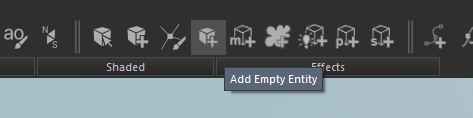
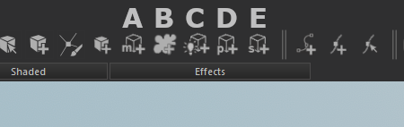
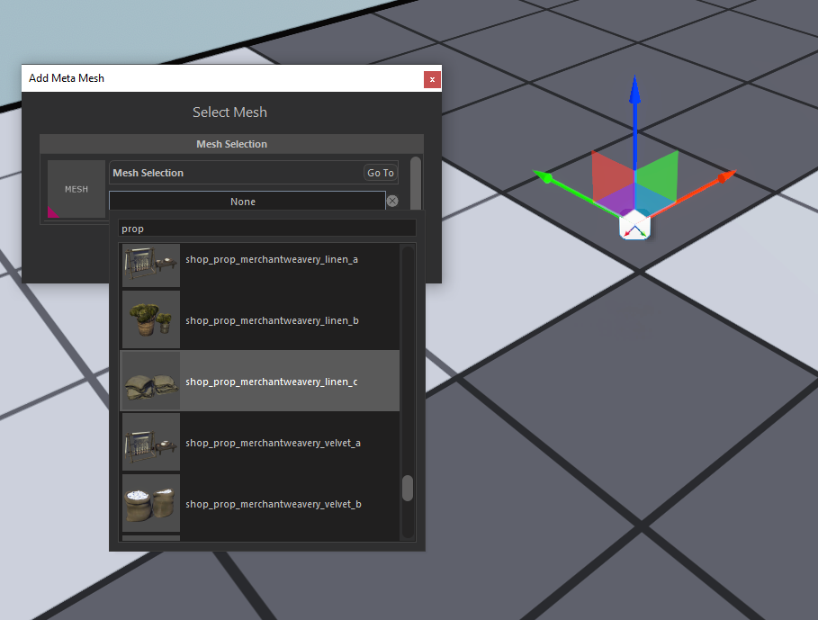
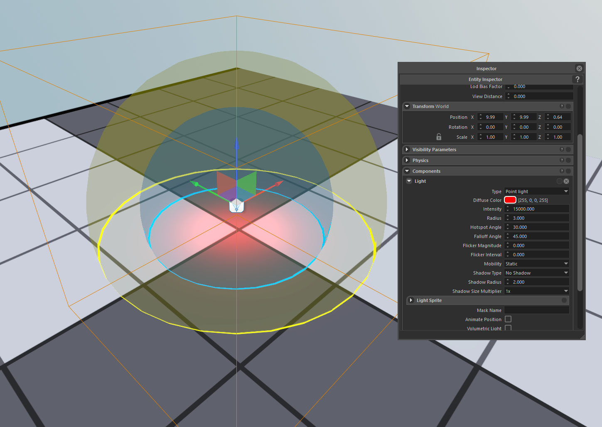
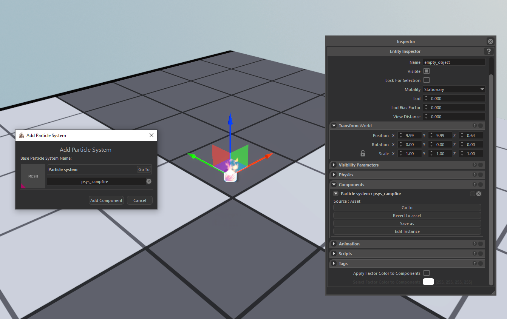
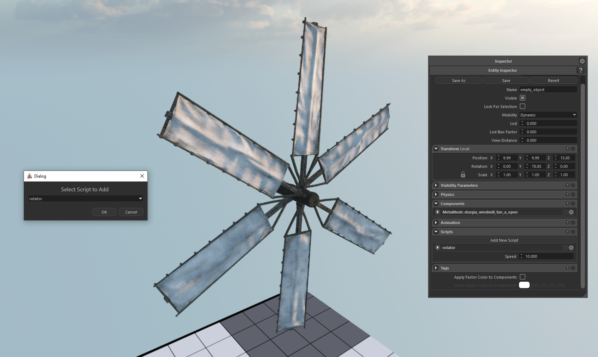
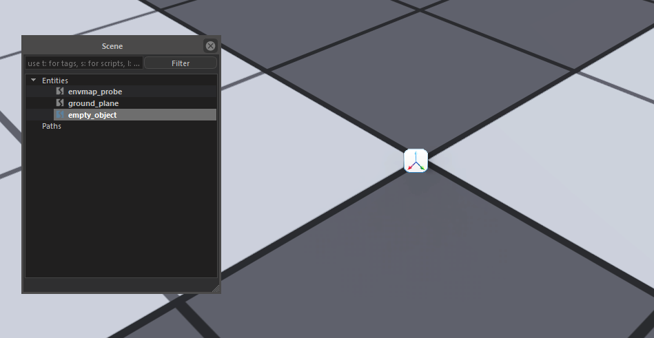
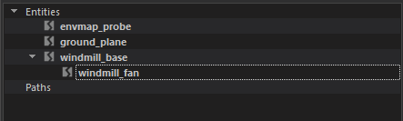
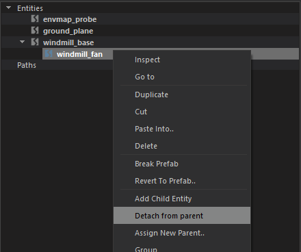
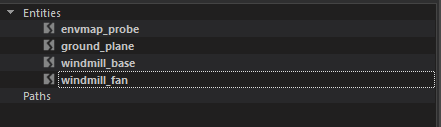

CREATING ENTITY
Game Entities are basic building blocks of Scenes. Every mesh, light, decal, script behaviour are components of entities.
Creating an empty entity

In the editor, you can begin by creating a new, empty entity by using the Add Empty Entity button from tool bar, then you can attach different components for different needs.
All entities can be composed of multiple components.
Adding Component

Component can be added from the toolbar after selecting an entity. There are 5 different components you can add. Mesh, Decal, Light, Particle, and Script.
A - Mesh:
Meshes are pretty straighforward and represent every visible geometry within the scene. After clicking add mesh button, select any mesh you want from mesh selection dialog.

B - Decal:
C - Light:
Lights can be used to illuminate the scene. Usually attached to other entities that supposed to emit light. (Like, torches, camp fires etc.)
Every light is fully customizable, you can enable/disable dynamic/static shadow, change light radius / shadow casting radius, intensity, and color from properties panel of light.
You can also specify custom effects like flickering for more natural lights. After clicking add light button, you can change properties of the light under Components panel in Entity Inspector.
Engine uses a technique called Tiled Deferred Rendering, so using lots of lights are pretty cheap as long as they are not overlapping too much.
These parameters can be tweaked to further optimize scenes.
In the scene visualizer, Yellow sphere represent light radius, and blue sphere represents shadow casting radius.

(D) Particle System:
Particles simulates and renders many small images or Meshes, to produce a visual effect.
Particles are useful when you want to create dynamic objects or volumetric effects like fire, smoke, or splash effects since they are quite hard, or even in most cases, not possible to create with regular meshes.
After clicking add particle button, and selecting an exsiting particle from the Particle selection dialog, you can edit this particular instance from Component panel by clicking Edit Instance,

(E) Script:
Scripts are the basic building blocks of game related behaviours that can be attached to entities.
Scripts can be written in C# and has full access to attached entity, its Scene, and therefore all other entities in that Scene.
After clicking add script button, you can select the script you want from the dropdown menu, then you can change the script parameters from Scrips panel under Entity Inspector.

Entity Hierarchies
Entities can have a parent child hierarcy to organize related entities together.
Child entities automatically get their world position relative to their parents, moving a parent entity will move all of their children. More imformation about manipulating an entity can be found Here
You can use the Entity Outliner to create hierarcies by simply dragging an entity over another entity.

You can also detach a child entity from its parent by right clicking and selecting Detach from parent.
|  |  |  |